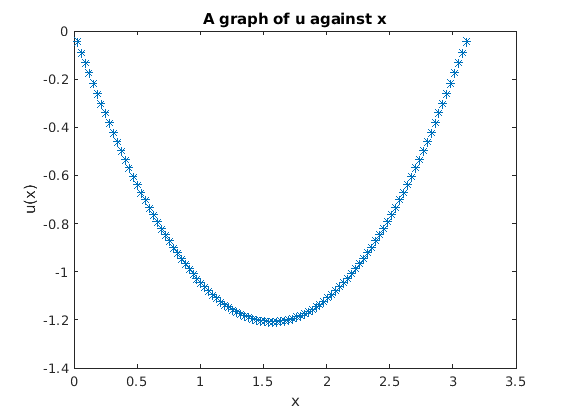

N=100;
a=1;
b=-2;
h=pi/N;
j=[1:N-1];
xj=h*j;
f=(h^2)*tanh(4*sin(pi*j/N));
ft=transpose(f);
fcap=dst(ft);
uc=2*a*cos(pi*j/N) + b;
ucap=fcap./transpose(uc);
u=idst(ucap);
fprintf('%10s %16.8e\n',u);
plot(xj,u,'*');
ylabel('u(x)');
xlabel('x');
title('A graph of u against x');
-4.375795e-02 -8.73925476e-02
-1.307843e-01 -1.73821216e-01
-2.164010e-01 -2.58432845e-01
-2.998381e-01 -3.40549912e-01
-3.805122e-01 -4.19678848e-01
-4.580122e-01 -4.95481690e-01
-5.320629e-01 -5.67736156e-01
-6.024858e-01 -6.36299427e-01
-6.691670e-01 -7.01080751e-01
-7.320343e-01 -7.62022613e-01
-7.910417e-01 -8.19088438e-01
-8.461601e-01 -8.72254798e-01
-8.973707e-01 -9.21506537e-01
-9.446612e-01 -9.66833728e-01
-9.880235e-01 -1.00822978e+00
-1.027452e+00 -1.04569027e+00
-1.062944e+00 -1.07921216e+00
-1.094495e+00 -1.10879337e+00
-1.122106e+00 -1.13443243e+00
-1.145773e+00 -1.15612831e+00
-1.165497e+00 -1.17388028e+00
-1.181277e+00 -1.18768782e+00
-1.193112e+00 -1.19755057e+00
-1.201003e+00 -1.20346831e+00
-1.204948e+00 -1.20544091e+00
-1.204948e+00 -1.20346831e+00
-1.201003e+00 -1.19755057e+00
-1.193112e+00 -1.18768782e+00
-1.181277e+00 -1.17388028e+00
-1.165497e+00 -1.15612831e+00
-1.145773e+00 -1.13443243e+00
-1.122106e+00 -1.10879337e+00
-1.094495e+00 -1.07921216e+00
-1.062944e+00 -1.04569027e+00
-1.027452e+00 -1.00822978e+00
-9.880235e-01 -9.66833728e-01
-9.446612e-01 -9.21506537e-01
-8.973707e-01 -8.72254798e-01
-8.461601e-01 -8.19088438e-01
-7.910417e-01 -7.62022613e-01
-7.320343e-01 -7.01080751e-01
-6.691670e-01 -6.36299427e-01
-6.024858e-01 -5.67736156e-01
-5.320629e-01 -4.95481690e-01
-4.580122e-01 -4.19678848e-01
-3.805122e-01 -3.40549912e-01
-2.998381e-01 -2.58432845e-01
-2.164010e-01 -1.73821216e-01
-1.307843e-01 -8.73925476e-02
-4.375795e-02
